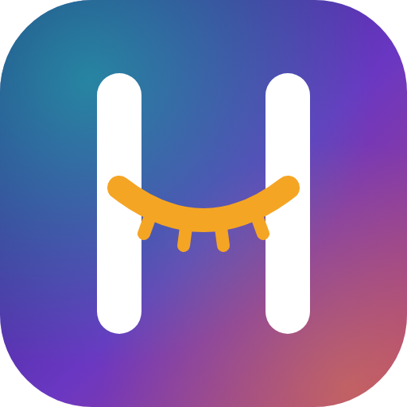
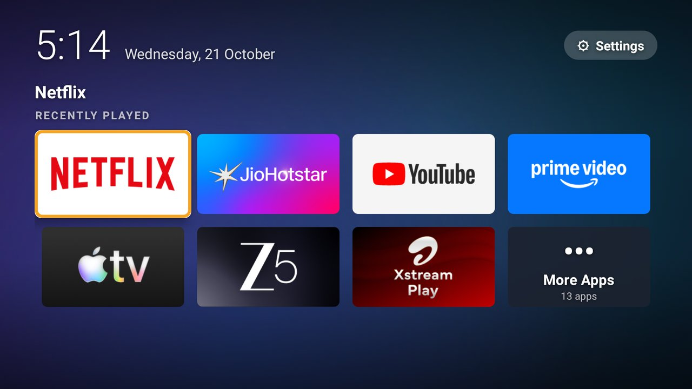
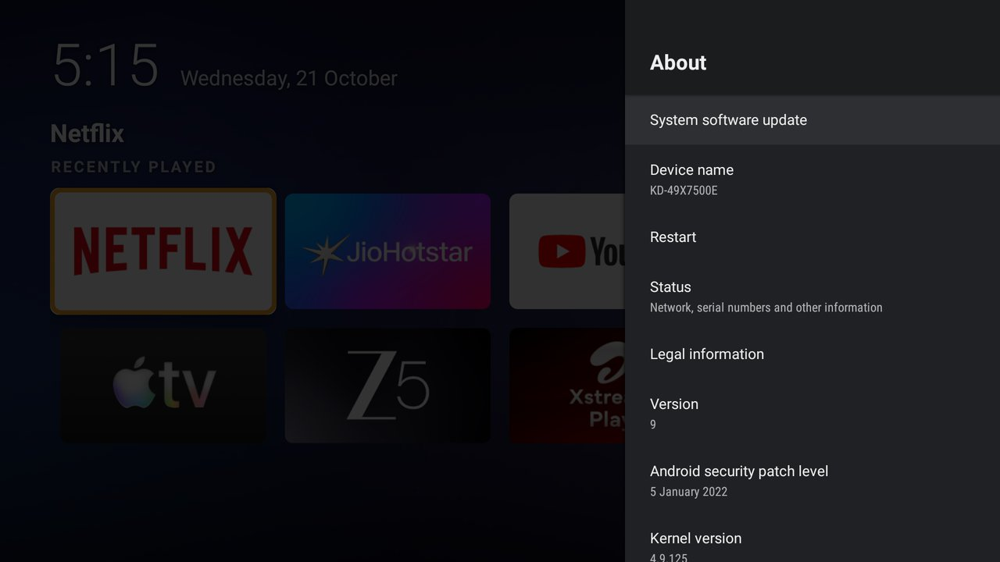
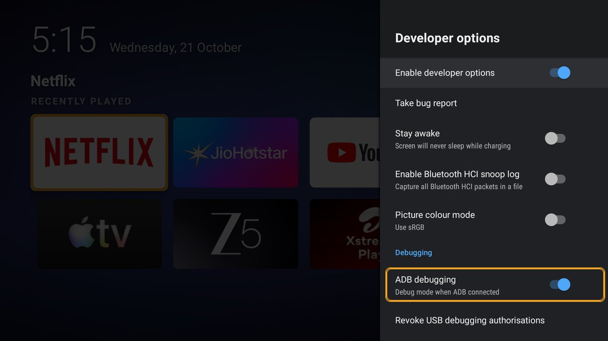
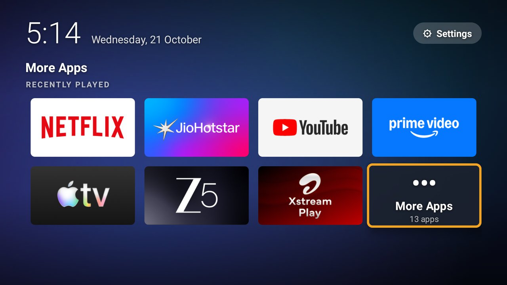
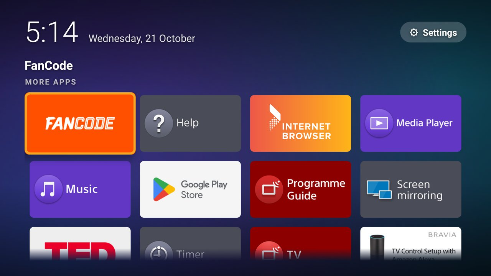
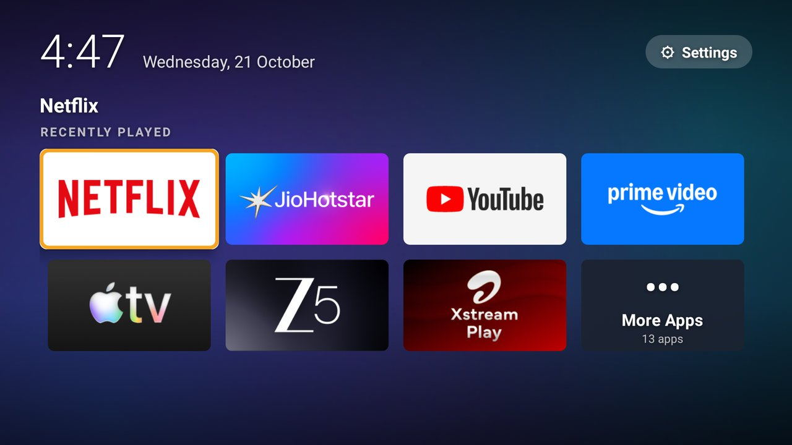
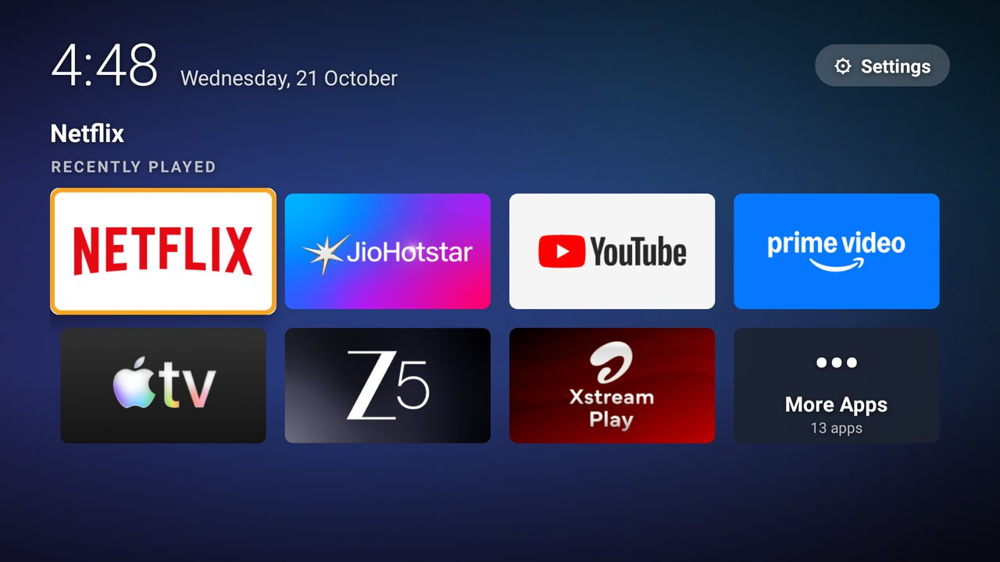

A calm, ad-free home screen for your older Android TV
About 20 minutes. Nothing is deleted or disabled on your TV, so every step can be undone.

What you need
- An Android TV (tested on Sony Bravia KD-49X7500E, Android TV 9; should work on Android TV 7–12).
- A computer (Mac, Windows or Linux) on the same Wi-Fi as the TV.
- Your TV remote.
Turn on Developer options
- Press Home, open Settings (the gear icon), then Device Preferences → About.
- Scroll down to Build, highlight it and press OK on the remote 7 times, about once a second.
- A message says "You are now a developer".

Turn on ADB debugging
- Press Back to Device Preferences. Developer options now appears near the bottom.
- Open it and switch on ADB debugging. On some TVs it's called USB debugging or Network debugging.

Find your TV's IP address
Go to Settings → Network & Internet (or About → Status) and note the IP address, for example 192.168.1.50.
Install ADB on your computer
ADB is Google's free tool for talking to Android devices.
| Mac | brew install --cask android-platform-tools |
|---|---|
| Windows | winget install Google.PlatformTools |
| Linux | sudo apt install adb (or your distro's equivalent) |
| Any | Download "SDK Platform-Tools" from developer.android.com and unzip it |
Install Hush and make it your Home screen
Download hush.apk from the project's Releases page, along with the repository (green Code button → Download ZIP) for the helper scripts.
Mac or Linux: one command
cd hush-tv-launcher
scripts/enable-as-home.sh 192.168.1.50 ~/Downloads/hush.apkWindows, or doing it by hand
adb connect 192.168.1.50:5555
adb install -r hush.apk
adb shell cmd appops set io.github.aniketrai.hush GET_USAGE_STATS allow
adb shell settings put secure enabled_accessibility_services io.github.aniketrai.hush/io.github.aniketrai.hush.HomeRedirectService
adb shell settings put secure accessibility_enabled 1hush.apk from the project's Releases page. The script shows the file's SHA-256 and asks you to compare it with the one in the Release notes before installing. At the end it offers to switch ADB debugging off for you; say yes. See SECURITY.md for exactly what Hush can and can't do.The first time, your TV asks "Allow USB debugging?". Tick Always allow from this computer and choose OK.
Now press Home on your remote. Hush appears. 🎉
Using Hush


| To… | Do this |
|---|---|
| Open Settings | Press Up to ⚙ Settings (top right) |
| Hide an app | Long-press OK on it → Hide from home |
| Bring hidden apps back / turn background motion off | Long-press OK on ⚙ Settings |
| Get the TV's original home screen | Press Home twice quickly (Hush stands aside for 10 minutes) |


Turn ADB debugging off again
Settings → Device Preferences → Developer options → ADB debugging: Off. Hush keeps working; this just closes the door your computer used.
How to undo everything
| Where | How |
|---|---|
| Remote only | Press Home twice → ⚙ Settings → Device Preferences → Accessibility → Hush → Off |
| Remove it | Settings → Apps → Hush → Uninstall. Home goes straight back to your TV's launcher. |
| From the computer | scripts/disable-home.sh 192.168.1.50 --uninstall |
Troubleshooting
"Connection refused" or "failed to connect"
ADB debugging isn't listening yet. Switch it off and on, or restart the TV. Check the IP address hasn't changed.
Home still opens the old home screen
- Check Settings → Accessibility → Hush is On.
- You may have pressed Home twice (the 10-minute stand-aside). Wait, or restart the TV.
- Some Google TV devices handle Home differently. Please open an issue with your TV model.
The app list looks wrong
Recently played learns as you use apps. To include apps opened from remote buttons, allow Usage access (the install command does this; or Settings → Apps → Special app access → Usage access → Hush).